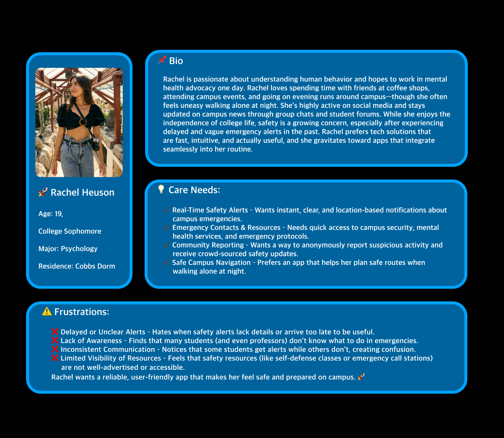

Qualitative Reserach
Qualitative research is defined as a market research method that focuses on obtaining data through open ended and conversational communication.
User Interview Questions
1. I feel safe on campus during the day.
2. I am aware of the emergency resources and protocols available on campus.
3. I trust the current campus alert system to provide timely and accurate safety updates.
4. I believe there are gaps in campus safety communication that need to be improved.

User Persona
Competition Analysis
My App: Vox
Overviw:
Vox is designed to create a safer and more informed campus community by providing real-time, accurate, and accessible emergency alerts while also educating students and faculty on safety protocols and available resources. It aims to fix gaps in current systems, ensuring that alerts reach all students, provide clear and actionable information, and integrate campus safety resources in one place.
Vox is designed to create a safer and more informed campus community by providing real-time, accurate, and accessible emergency alerts while also educating students and faculty on safety protocols and available resources. It aims to fix gaps in current systems, ensuring that alerts reach all students, provide clear and actionable information, and integrate campus safety resources in one place.
Strengths
Provides real-time notifications that are clear, detailed, and location-based. Combines alerts, emergency response instructions, and resource awareness in one platform. Intuitive interface designed with direct student and faculty feedback. Potential for peer reports and tips, creating a collective approach to safety Direct collaboration with campus security and administration.
Provides real-time notifications that are clear, detailed, and location-based. Combines alerts, emergency response instructions, and resource awareness in one platform. Intuitive interface designed with direct student and faculty feedback. Potential for peer reports and tips, creating a collective approach to safety Direct collaboration with campus security and administration.
Weaknesses
Encouraging students and faculty to download and actively use the app may be a challenge. Would require cooperation from the university's IT and public safety teams to access their alert infrastructure. If too many non-critical alerts are sent, users might start ignoring notifications.
Encouraging students and faculty to download and actively use the app may be a challenge. Would require cooperation from the university's IT and public safety teams to access their alert infrastructure. If too many non-critical alerts are sent, users might start ignoring notifications.
Opportunities
Personalized alerts based on location, time, and severity. Partnerships with other Universities Integration with smartwatches, social media, and voice assistants for accessibility.
Personalized alerts based on location, time, and severity. Partnerships with other Universities Integration with smartwatches, social media, and voice assistants for accessibility.
Threats
Universities might prefer their current safety systems. Users may worry about location tracking and data security. If universities don't endorse the app, adoption could be limited.
Universities might prefer their current safety systems. Users may worry about location tracking and data security. If universities don't endorse the app, adoption could be limited.
Competitor 2: LiveSafe
Overviw:
LiveSafe is a widely used mobile safety app that allows students to report incidents, receive emergency alerts, and directly communicate with campus security. It focuses on two-way communication between users and law enforcement.
LiveSafe is a widely used mobile safety app that allows students to report incidents, receive emergency alerts, and directly communicate with campus security. It focuses on two-way communication between users and law enforcement.
Strengths:
Already used by many universities, making adoption easier. Users can send tips, photos, and live location to campus security.Geofencing & Location. Helps security teams respond more effectively.
Already used by many universities, making adoption easier. Users can send tips, photos, and live location to campus security.Geofencing & Location. Helps security teams respond more effectively.
Weaknesses:
User Experience Issues - Some students find the UI clunky and outdated.Reliance on Campus Security - If security teams are slow to respond, the app loses effectiveness.Limited Awareness Features - Focuses more on reporting & alerts, less on educating students about safety resources.
User Experience Issues - Some students find the UI clunky and outdated.Reliance on Campus Security - If security teams are slow to respond, the app loses effectiveness.Limited Awareness Features - Focuses more on reporting & alerts, less on educating students about safety resources.
Opportunities:
Improved UI/UX Design - A more modern, user-friendly interface could increase engagement. Integration with Smart Devices - Adding smartwatch compatibility could improve accessibility.
Improved UI/UX Design - A more modern, user-friendly interface could increase engagement. Integration with Smart Devices - Adding smartwatch compatibility could improve accessibility.
Threats:
New Competitors - Apps with better design and features could draw users away. Privacy Concerns - Some users hesitate to share real-time location with authorities.
New Competitors - Apps with better design and features could draw users away. Privacy Concerns - Some users hesitate to share real-time location with authorities.
Competitor 3: RaveGuard
Overviw:
Rave Guardian is a campus safety app that acts as a virtual escort, allowing users to set safety timers and share their location with friends or security. It also provides emergency alerts from campus authorities.
Rave Guardian is a campus safety app that acts as a virtual escort, allowing users to set safety timers and share their location with friends or security. It also provides emergency alerts from campus authorities.
Strengths:
Personal Safety Timer - Students can set a timer while traveling alone and alert others if they don't check in. Direct Contact with Police - Emergency calls go straight to campus security or local authorities. Trusted by Schools - Many universities already integrate Rave Guardian into their safety systems.
Personal Safety Timer - Students can set a timer while traveling alone and alert others if they don't check in. Direct Contact with Police - Emergency calls go straight to campus security or local authorities. Trusted by Schools - Many universities already integrate Rave Guardian into their safety systems.
Weaknesses:
Limited Alert Customization - Users can't personalize what types of alerts they receive.No Educational Resources - The app doesn't provide safety guides or emergency protocols. Reliance on Active Use - Users have to manually set safety timers, which some forget to do.
Limited Alert Customization - Users can't personalize what types of alerts they receive.No Educational Resources - The app doesn't provide safety guides or emergency protocols. Reliance on Active Use - Users have to manually set safety timers, which some forget to do.
Opportunities:
Customizable Alerts - Giving users control over notifications could improve engagement.Partnerships with Student Organizations - Promoting peer-to-peer safety initiatives.
Customizable Alerts - Giving users control over notifications could improve engagement.Partnerships with Student Organizations - Promoting peer-to-peer safety initiatives.
Threats:
User Engagement Issues - If students don't actively use the timer feature, the app loses value.Competition from Newer Solutions - New apps with better real-time alerting systems could outperform it.
User Engagement Issues - If students don't actively use the timer feature, the app loses value.Competition from Newer Solutions - New apps with better real-time alerting systems could outperform it.